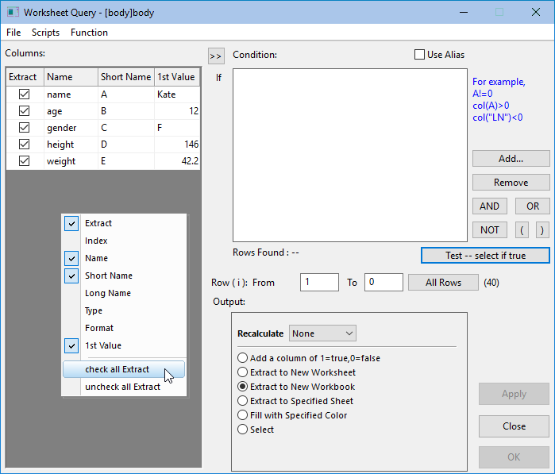
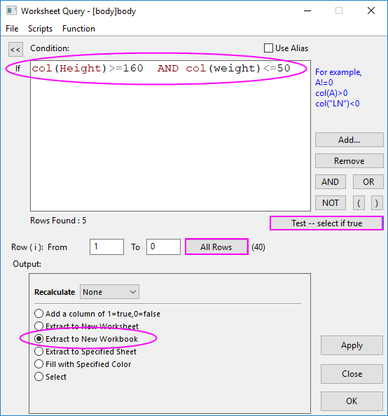
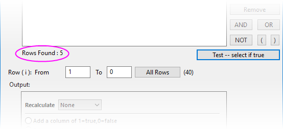

Daten aus Arbeitsblatt extrahieren
Extract-Wks-Data
Zusammenfassung
Dieses Tutorial zeigt Ihnen, wie Sie den Dialog Daten aus Arbeitsblatt extrahieren verwenden.
Origin-Version mind. erforderlich: Origin 2019b
Was Sie lernen werden
Dieses Tutorial zeigt Ihnen, wie Sie:
- numerische und Zeitdaten extrahieren,
- ein Alias in einer Extraktionsbedingung verwenden,
- LabTalk-Funktionen in einer Extraktionsbedingung verwenden.
Dialogübersicht
 |
Der Dialog Daten aus Arbeitsblatt extrahieren unterscheidet sich leicht von dem Bild unten, wenn (a) Zellennotation für Tabellenkalkulationsblätter (SCN) in der aktiven Arbeitsmappe ausgeschaltet ist (Sie sehen dieses Symbol  in der oberen linken Ecke der Arbeitsmappe) oder (b) Sie SCN eingeschaltet haben, aber das Kästchen Alias verwenden in der oberen rechten Ecke von Daten aus Arbeitsblatt extrahieren aktiviert ist. Der Dialog Daten aus Arbeitsblatt extrahieren wurde für Version 2019b modifiziert, um Spalten flexibler benennen zu können. Sie können dieses Tutorial immer noch bearbeiten, wenn Sie Spaltenaliase definieren. Anweisungen hierzu finden Sie unter Spaltenvariablen für If-Abfrage wählen. in der oberen linken Ecke der Arbeitsmappe) oder (b) Sie SCN eingeschaltet haben, aber das Kästchen Alias verwenden in der oberen rechten Ecke von Daten aus Arbeitsblatt extrahieren aktiviert ist. Der Dialog Daten aus Arbeitsblatt extrahieren wurde für Version 2019b modifiziert, um Spalten flexibler benennen zu können. Sie können dieses Tutorial immer noch bearbeiten, wenn Sie Spaltenaliase definieren. Anweisungen hierzu finden Sie unter Spaltenvariablen für If-Abfrage wählen.
|
- 
Grundsätzlich gibt es zwei Hauptbedienfelder in dem Dialog Daten aus Arbeitsblatt extrahieren:
- Das linke Bedienfeld listet alle Spalten im aktiven Arbeitsblatt auf. Klicken Sie mit der rechten Maustaste auf das linke Bedienfeld und wählen Sie, welche Spalteneigenschaften angezeigt werden sollen (z. B. Format, 1. Wert etc). Beachten Sie, dass diese Spalten, die in der Spalte Extrahieren aktiviert sind, ausgegeben werden, wenn Sie im Dialog auf OK klicken.
- Im rechten Feld stellen Sie Extraktionsbedingungen ein, testen sie und führen Sie sie aus. Wenn SCN ausgeschaltet ist oder Sie das Kontrollkästchen Alias verwenden aktiviert haben, markieren Sie die Arbeitsblattspalten, die Sie in der Extraktionsbedingung im linken Bedienfeld verwenden möchten, und klicken Sie dann auf die Schaltfläche
 , um sie in das Feld Spaltenvariablen für If-Abfrage wählen zu verschieben. Sie haben dann die Aliase, die Sie zum Definieren Ihrer Bedingung brauchen. Wenn Sie beabsichtigen, Spaltennamen oder Indizes anstatt von Aliasen zu verwenden, können Sie Ihre Bedingung einfach direkt definieren.
, um sie in das Feld Spaltenvariablen für If-Abfrage wählen zu verschieben. Sie haben dann die Aliase, die Sie zum Definieren Ihrer Bedingung brauchen. Wenn Sie beabsichtigen, Spaltennamen oder Indizes anstatt von Aliasen zu verwenden, können Sie Ihre Bedingung einfach direkt definieren.
Bedingung definieren
Numerische Daten extrahieren
- Öffnen Sie eine neue Arbeitsmappe und importieren Sie die Datei \Samples\Statistics\body.dat.
- Wählen Sie im Menü Arbeitsblatt: Daten aus Arbeitsblatt extrahieren, um den Dialog Daten aus Arbeitsblatt extrahieren zu öffnen.
Wenn Sie die korrekte Syntax kennen, können Sie Ihren Ausdruck direkt in das Feld Bedingung eingeben. Um Ihnen beim Erzeugen Ihres Ausdrucks zu helfen, können Sie die Schaltflächen rechts von Bedingung verwenden. Außerdem können Sie Funktionen und Variablen aus dem Menü Funktion einfügen.
- Um die Daten der Individuen, die mindestens 160 cm groß sind, zu extrahieren, geben Sie Folgendes im Bedingungsfeld ein:
col(height)>=160
- Wenn es mehrere Bedingungen gibt, können Sie die Bedingungen durch logische Operatoren AND, OR, NOT kombinieren. Wir fügen eine zweite Bedingung hinzu, die auf Individuen testet, die nicht mehr als 50 kg wiegen. Klicken Sie auf die Schaltfläche AND und geben Sie Folgendes nach AND ein:
col(weight)<=50
Ihr Ausdruck sollte nun folgendermaßen aussehen:
-
- 
- Um Ihre Abfrage zu testen, klicken Sie auf die Schaltfläche Alle Zeilen, um alle Zeilen auszuwählen (beachten Sie, dass die 0 in 1 bis 0 die letzte Zeile im Blatt bezeichnet). Klicken Sie dann auf Test -- Auswählen falls wahr, um Ihren Ausdruck zu testen. Origin gibt 5 gefundene Einträge aus.
-
- 
- Akzeptieren Sie andere Standardeinstellungen und klicken Sie auf die Schaltfläche OK. Eine neue Arbeitsmappe, die die 5 gefundenen Einträge enthält, wird erstellt.
Zeichenketten extrahieren
Beim Extrahieren der Zeichenketten sollten Sie die Zeichenketten in doppelte Anführungszeichen setzen (z. B. "California").
- Um nur weibliche Subjekte (F) zu extrahieren, geben wir Folgendes in das Feld Bedingung ein:
col(gender) == "F"
- Klicken Sie auf die Schaltfläche Alle Zeilen und klicken Sie dann auf Test -- Auswählen falls wahr. Eine Meldung zeigt, dass 18 Einträge gefunden wurden.
- Übernehmen Sie die Standardeinstellungen und klicken Sie auf OK, um den Dialog zu schließen und Daten für weibliche Subjekte in eine neue Arbeitsmappe zu extrahieren.
Zeitdaten extrahieren
Datums- und Zeitdaten sind intern als numerische Werte in Origin gespeichert. Das Datum ist der ganzzahlige Zahl des numerischen Werts, während Zeit den Bruchteil darstellt. Sie können die Funktionen int() und frac() verwenden, um zum ganzzahligen Teil bzw. Bruchteil einer Zahl zurückzukehren, und die Funktionen Date(MM/DD/YY) und Time(HH:mm:ss), um Zeichenketten in numerische Julianische Tagesdaten zu konvertieren.
- Öffnen Sie eine neue Arbeitsmappe. Wählen Sie Hilfe: Ordner öffnen: Sample-Ordner ... im Menü, um den Ordner "Samples" zu öffnen. Öffnen Sie in diesem Ordner den Unterordner Import and Export. Dort befindet sich die Datei Custom Date and Time.dat. Ziehen Sie diese Datei per Drag&Drop in das leere Arbeitsblatt, um sie zu importieren. Beachten Sie, dass die "Datums/Zeit"-Daten in Spalte A links ausgerichtet sind, was darauf hinweist, dass sie als Textzeichenketten behandelt werden und nicht als wahre Datums-/Zeitdaten (die numerisch sind).
- Markieren Sie Spalte A, klicken Sie mit der rechten Maustaste und wählen Sie Einstellungen. Setzen Sie das Format = Datum, Anzeige = Benutzerdefinierte Anzeige und geben Sie in Benutzerdefinierte Anzeige Folgendes ein:
dd'.'MM'.'yyyy HH':'mm':'ss'.'##
Dies formatiert die Datums-/Zeitzeichenketten in Spalte A als numerische Datums-/Zeitdaten.
- Als Nächstes extrahieren wir den Anteil der Arbeitsblattdaten, der in den Zeitraum 10:00:00 und 11:00:00 fällt. Klicken Sie auf Arbeitsblatt: Daten aus Arbeitsblatt extrahieren und geben Sie im Feld Bedingung Folgendes ein:
frac(A) > Time(10:00:00) AND frac(A) < Time(11:00:00)
- Klicken Sie auf die Schaltfläche Alle Zeilen und klicken Sie dann auf Test -- Auswählen falls wahr. Eine Meldung zeigt, dass 120 Einträge gefunden wurden.
- Übernehmen Sie die Standardeinstellungen und klicken Sie auf OK, um den Dialog zu schließen und Daten, die zwischen 10:00:00 und 11:00:00 aufgezeichnet wurden, in eine neue Arbeitsmappe zu extrahieren.
|
Sie könnten die Daten mit Hilfe eines Datenkonnektors in Schritt 1 importiert haben. Ein einfacher Drag&Drop der Datendatei Custom Date and Time.dat würde die Datums- und Zeitdaten in zwei Spalten aufteilen, jede richtig als Datum und Zeit formatiert. Dies erspart Ihnen die Mühe, die Daten mit Hilfe der Zeichenkette in Schritt 2 manuell formatieren zu müssen.
|